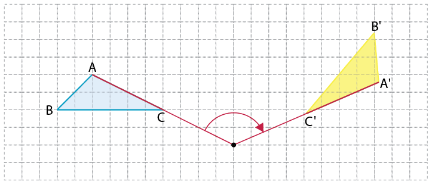
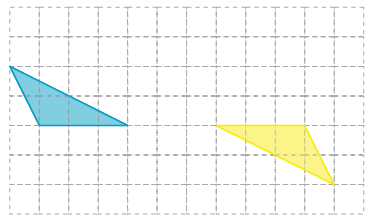
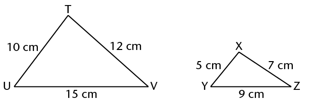

<div class="container">
  <div id="contents" class="col-md-12 main-content"><h1 xmlns="http://www.w3.org/1999/xhtml" id="toc-id-13">Transformasiemeetkunde</h1>
    
 <p xmlns="http://www.w3.org/1999/xhtml" class="Body-opener-no-indent">In vorige grade het jy van die translasie (skuif), refleksie 
	(omklap) en rotasie (draai) van
	meetkundige figure geleer. Hierdie verandering in die posisies van figure is soorte
	transformasies. Jy gaan nou leer hoe om transformasies op ’n koördinaatstelsel aan te stip.
	Hier gaan jy fokus op die verandering in die koördinate van punte en meetkundige figure
	op die koördinaatstelsel. Jy gaan ook hersien hoe om figure te vergroot en verklein, en in
	meer besonderhede ondersoek hoe die sye van figure wat vergroot en verklein is in
	proporsie moet bly. Daarna gaan jy verken hoe die vergroting en verkleining van ’n
	figuur sy omtrek en oppervlakte beïnvloed.
</p>

    <h2 xmlns="http://www.w3.org/1999/xhtml" id="toc-id-14">Transformasies en koördinaatstelsels</h2>

    <h3 xmlns="http://www.w3.org/1999/xhtml" class="Head-investigation--after-b-head-">Wat is transformasies?</h3>

    <p xmlns="http://www.w3.org/1999/xhtml" class="Body-no-indent">’n Figuur kan op ’n plat oppervlak van een posisie na ’n ander verplaas word deur te
	<b>skuif</b> (transleer), te <b>draai</b> (roteer), of <b>om te klap</b> (te reflekteer of spieëlbeeld te vertoon),
	of deur ’n kombinasie van die bewegings. Hierdie en ander bewegings word ook
	<b>transformasies</b> genoem.</p>

 <div xmlns="http://www.w3.org/1999/xhtml" class="aside">
    <p class="Box-list-head">n Skuif, ook ‘n
		<b>translasie</b> genoem</p>
  </div>
  
    <div xmlns="http://www.w3.org/1999/xhtml" class="frame-4"></div>

    <p xmlns="http://www.w3.org/1999/xhtml" class="Body-no-indent">’n Skuif kan ook
	stapsgewys plaasvind,
	soos die groen pyle
	aandui.
	</p>

    <div xmlns="http://www.w3.org/1999/xhtml" class="aside">
      <p class="Box-list-head">’n Omklap, ook ’n
	refleksie of
	spieëlbeeld genoem
	</p>
      </div>
      
    <div xmlns="http://www.w3.org/1999/xhtml" class="frame-4"></div>

    <p xmlns="http://www.w3.org/1999/xhtml" class="Body-no-indent">Jy kan dit ook verstaan
	as die resultaat van ’n
	vou op die stippellyn.
	</p>

    <div xmlns="http://www.w3.org/1999/xhtml" class="aside">
    <p class="Box-list-head">’n Swaai of draai, ook
	’n <b>rotasie</b> genoem
	</p>
  </div>

    <div xmlns="http://www.w3.org/1999/xhtml" class="frame-4"></div>

    <p xmlns="http://www.w3.org/1999/xhtml" class="Body-no-indent para-style-override-13">Die voorwerp word
	kloksgewys of
	antikloksgewys om ’n
	rotasiepunt geswaai
	(gedraai). Dit is asof jy
	die voorwerp aan ’n
	toutjie vashou.</p>

    <p xmlns="http://www.w3.org/1999/xhtml" class="Body-no-indent">In sy nuwe posisie word die figuur die <b>beeld</b> van die 
	oorspronklike figuur genoem. Die
	oorspronklike figure hier bo is blou en die beelde is geel. Translasies, 
	rotasies en refleksies
	verander nie die vorm of die grootte van die figuur nie. In hierdie transformasies is die
	oorspronklike figure en hulle beelde dus altyd kongruent.</p>

    <p xmlns="http://www.w3.org/1999/xhtml" class="Body-no-indent">Wanneer ons die beeld benoem, gebruik ons dieselfde letters as 
	in die oorspronklike
	figuur, maar ons voeg die priemsimbool (') na elke letter by. Die beeld van ∆PQR is
	∆P'Q'R'. As daar ’n tweede beeld is, voeg ons twee priemsimbole by, byvoorbeeld
	∆P''Q''R''. By ’n derde beeld word drie priemsimbole gebruik: ∆P'''Q'''R''', ensovoorts.
	</p>

    <p xmlns="http://www.w3.org/1999/xhtml" class="Body-investigation"><span></span> </p>

    <p xmlns="http://www.w3.org/1999/xhtml" class="Body-no-indent">Die rooster op die agtergrond maak dit moontlik om die
	verskillende posisies van die figuur duidelik te beskryf.
	Om dit te doen kan ’n assestelsel op die rooster getrek word
	om ’n koördinaatstelsel te vorm, soos jy op die volgende
	bladsy sal sien. Maar beantwoord eers die vraag hier onder.
	</p>

    <div xmlns="http://www.w3.org/1999/xhtml" class="aside">
      <p class="Body-box-no-indent">’n <b>Koördinaatstelsel</b> bestaan
	uit gemerkte horisontale en
	vertikale lyne wat gebruik word
	om posisie aan te dui.
	</p>
    </div>

    <p xmlns="http://www.w3.org/1999/xhtml" class="Body-investigation">Sê in elke geval of die driehoek getransleer, 
	gereflekteer of geroteer is.</p>

    <p xmlns="http://www.w3.org/1999/xhtml" class="ques-a-">1. <span></span> 2. <span></span> </p>

       <div xmlns="http://www.w3.org/1999/xhtml" class="Basic-Text-Frame">
        <hr/></div>


    <p xmlns="http://www.w3.org/1999/xhtml" class="ques-a-">3. <span></span> 4. <span></span> </p>

        <div xmlns="http://www.w3.org/1999/xhtml" class="Basic-Text-Frame">
        <hr/></div>


    <p xmlns="http://www.w3.org/1999/xhtml" class="ques-a-">5. <span></span> 6. <span></span> </p>

       <div xmlns="http://www.w3.org/1999/xhtml" class="Basic-Text-Frame">
        <hr/></div>


    <h3 xmlns="http://www.w3.org/1999/xhtml" class="Head-investigation">Die koördinaatstelsel</h3>

    <p xmlns="http://www.w3.org/1999/xhtml" class="Body-no-indent">Die posisie van enige punt op ’n koördinaatstelsel kan deur 
	twee getalle weergegee word,
	soos hier onder by punte A, B, C en D gedemonstreer.
	</p>

    <div xmlns="http://www.w3.org/1999/xhtml" class="aside">
      <p class="Body-box-no-indent">’n Koördinaatstelsel word ook
	’n stelsel van Cartesiese
	koördinate genoem. Dit
	is ter ere van die Franse
	wiskundige Descartes, wat dit
	uitgedink het.
	</p>
    </div>

    <p xmlns="http://www.w3.org/1999/xhtml" class="Body-no-indent"><span></span></p>

    <p xmlns="http://www.w3.org/1999/xhtml" class="Body-no-indent">Die horisontale as op die koördinaatstelsel word die \(x\)-as genoem en 
die vertikale as
word die y-as genoem. Die geordende paar (4; 3) dui aan dat die waarde van die
x-koördinaat 4 is en die waarde van die \(y\)-koördinaat 3 is. ’n Koördinaatstelsel is in vier
dele of seksies verdeel wat <b>kwadrante</b> genoem word.
</p>

    <p xmlns="http://www.w3.org/1999/xhtml" class="Body-investigation">1. Wat is die koördinate van die volgende punte op die
	 rooster hier bo?</p>

    <p xmlns="http://www.w3.org/1999/xhtml" class="ques-a--3-columns para-style-override-16">E</p>
    <hr xmlns="http://www.w3.org/1999/xhtml"/><p xmlns="http://www.w3.org/1999/xhtml" class="ques-a--3-columns para-style-override-16">F</p>
    <hr xmlns="http://www.w3.org/1999/xhtml"/><p xmlns="http://www.w3.org/1999/xhtml" class="ques-a--3-columns para-style-override-16">G</p>
    <hr xmlns="http://www.w3.org/1999/xhtml"/><p xmlns="http://www.w3.org/1999/xhtml" class="ques-a--3-columns">H</p>
    <hr xmlns="http://www.w3.org/1999/xhtml"/><p xmlns="http://www.w3.org/1999/xhtml" class="ques-a--3-columns">I</p>
    <hr xmlns="http://www.w3.org/1999/xhtml"/><p xmlns="http://www.w3.org/1999/xhtml" class="ques-a--3-columns">J</p>
    <hr xmlns="http://www.w3.org/1999/xhtml"/><p xmlns="http://www.w3.org/1999/xhtml" class="Body-investigation">Die eerste kwadrant op die stelsel regs is
	geel, die tweede kwadrant is groen, die
	derde kwadrant is blou en die vierde
	kwadrant is rooi.
	</p>

    <div xmlns="http://www.w3.org/1999/xhtml" class="frame-4"></div>

 

    <p xmlns="http://www.w3.org/1999/xhtml" class="Body-investigation">2. Merk die volgende punte op die
    gekleurde koördinaatstelsel.</p>

    <p xmlns="http://www.w3.org/1999/xhtml" class="Body-investigation">A(5; 2) B(-4; 3)</p>

    <p xmlns="http://www.w3.org/1999/xhtml" class="Body-investigation">C(-5; 1) D(-3; -3)</p>

    <p xmlns="http://www.w3.org/1999/xhtml" class="Body-investigation">E(-6; -2) F(2; -3)</p>

    <p xmlns="http://www.w3.org/1999/xhtml" class="Body-investigation">G(5; -2) H(4; -6)</p>

    <p xmlns="http://www.w3.org/1999/xhtml" class="ques-a--2-space-below">3. (a) In watter kwadrant is beide die koördinate positief?</p>
    <hr xmlns="http://www.w3.org/1999/xhtml"/><p xmlns="http://www.w3.org/1999/xhtml" class="ques-a--2-space-below">(b) In watter kwadrant is beide die koördinate negatief?</p>
    <hr xmlns="http://www.w3.org/1999/xhtml"/><p xmlns="http://www.w3.org/1999/xhtml" class="ques-a--2-space-below">(c) In watter kwadrant is slegs die x-koördinaat negatief?
</p>
    <hr xmlns="http://www.w3.org/1999/xhtml"/><p xmlns="http://www.w3.org/1999/xhtml" class="ques-a--2-space-below">(d) In watter kwadrant is slegs die y-koördinaat negatief?
</p>
    <hr xmlns="http://www.w3.org/1999/xhtml"/>
    
    <h2 xmlns="http://www.w3.org/1999/xhtml" id="toc-id-15">Translasie op die koördinaatstelsel</h2>

    <div xmlns="http://www.w3.org/1999/xhtml" class="note">
      <p class="Body-content-no-indent">Hersien die <b>eienskappe van translasie:</b></p>
	
      <ul>
	  <li>Die lynstukke wat enige punt in die oorspronklike 
	figuur met sy beeld verbind, het almal dieselfde 
	lengte. In die diagram: 
	 PP' = RR' = QQ' </li>
	  <li>Die lynstukke wat enige oorspronklike punt in die 
	figuur met sy beeld verbind, is almal ewewydig. In 
	die diagram: 
	 PP'||RR'||QQ' </li>
	<li>As ’n figuur getransleer word, verander sy vorm en
	grootte nie. Die oorspronklike figuur en sy beeld is
	kongruent.</li>
</ul>   
    </div>

    <div xmlns="http://www.w3.org/1999/xhtml" class="frame-4"></div>

    <h3 xmlns="http://www.w3.org/1999/xhtml" class="Head-investigation">Transleer punte op die koördinaatstelsel</h3>

    <p xmlns="http://www.w3.org/1999/xhtml" class="Body-investigation">1. Stip die beeld van elk van die volgende
	translasies</p>

    <p xmlns="http://www.w3.org/1999/xhtml" class="ques-a-">(a) R is 3 eenhede af, na R' geskuif.</p>

    <p xmlns="http://www.w3.org/1999/xhtml" class="ques-a-">(b) R' is 4 eenhede links, na R'' geskuif.</p>

    <p xmlns="http://www.w3.org/1999/xhtml" class="ques-a-">(c) W is 5 eenhede regs, na W' geskuif.</p>

    <p xmlns="http://www.w3.org/1999/xhtml" class="ques-a-">(d) W' is 6 eenhede op, na W'' geskuif.</p>

    <div xmlns="http://www.w3.org/1999/xhtml" class="frame-4"></div>

<p xmlns="http://www.w3.org/1999/xhtml" class="ques-a-">2. (a) Skryf die koördinate van punte A,
	B en C neer.</p>
    <hr xmlns="http://www.w3.org/1999/xhtml"/><p xmlns="http://www.w3.org/1999/xhtml" class="ques-a-">(b)  Skuif A, B en C 6 eenhede links en
	4 eenhede op.</p>

    <p xmlns="http://www.w3.org/1999/xhtml" class="ques-a-">(c) Skryf die koördinate van punte A',
	B' en C' neer.</p>
    <hr xmlns="http://www.w3.org/1999/xhtml"/><p xmlns="http://www.w3.org/1999/xhtml" class="ques-a-">(d) Verbind punte A, B en C om ’n
	driehoek te vorm. Doen dieselfde met
	punte A', B' en C'.</p>

    <p xmlns="http://www.w3.org/1999/xhtml" class="ques-a-">(e) Is \( \triangle ABC\) en
    \(\triangle A'B'C' \)  kongruent?</p>
    <hr xmlns="http://www.w3.org/1999/xhtml"/>
    
    <div xmlns="http://www.w3.org/1999/xhtml" class="frame-4"></div>
    
    <h3 xmlns="http://www.w3.org/1999/xhtml" class="Head-investigation">Transleer driehoeke op die koördinaatstelsel</h3>

    <p xmlns="http://www.w3.org/1999/xhtml" class="Body-no-indent">As jy die translasie van ’n figuur beplan, moet jy eers die hoekpunte van die beeld van die
figuur aanstip. Daarna verbind jy die punte om die beeld te skep.</p>

    <p xmlns="http://www.w3.org/1999/xhtml" class="ques-a-">1. (a)  

   
 Transleer \(\triangle PQR\) 6 eenhede
regs en 2 eenhede af. Wat is
die koördinate van die
hoekpunte van
 \(\triangle P'Q'R'\)?</p><div xmlns="http://www.w3.org/1999/xhtml" class="frame-4"></div>
    <hr xmlns="http://www.w3.org/1999/xhtml"/><p xmlns="http://www.w3.org/1999/xhtml" class="ques-a-">(b) Transleer \(\triangle PQR\) 4 eenhede
links en 3 eenhede op. Wat
is die koördinate van die
hoekpunte van \(\triangle PQ''R''\)?</p>
    <hr xmlns="http://www.w3.org/1999/xhtml"/><p xmlns="http://www.w3.org/1999/xhtml" class="ques-a-">2. (a) Transleer \(\triangle DEF\) 4eenhede
links en 2 eenhede op. Wat
is die koördinate van die
hoekpunte van \(\triangle D'E'F'\)?</p>

    <div xmlns="http://www.w3.org/1999/xhtml" class="frame-4"></div>


    <hr xmlns="http://www.w3.org/1999/xhtml"/><p xmlns="http://www.w3.org/1999/xhtml" class="ques-a-">(b) Transleer \(\triangle DEF\) 3 eenhede
regs en 4 eenhede op. Wat is
die koördinate van die
hoekpunte van
 \\(\triangle D''E''F''\)?</p>
    <hr xmlns="http://www.w3.org/1999/xhtml"/><p xmlns="http://www.w3.org/1999/xhtml" class="Body-investigation-hanging">3. Skryf die koördinate van die hoekpunte van
 \(\triangle KLM\) neer na elke translasie soos beskryf
in die tabel.</p>

    <table xmlns="http://www.w3.org/1999/xhtml" id="table-69" class="No-Table-Style table-style-override-2"><tbody><tr class="Ry-Column-162"><td class="cell-style-override-4">
            <p class="Table-header-left"><b>Hoekpunte van
driehoek
</b></p>
          </td>

          <td class="cell-style-override-4">
		<p><b>Geskuif:</b></p>
            <p class="Table-header-left">5 eenhede regs en
2 eenhede af</p>
          </td>

          <td class="cell-style-override-4">
		<p><b>Geskuif:</b></p>
            <p class="Table-header-left">4 eenhede links en
3 eenhede af</p>
          </td>

          <td class="cell-style-override-4">
		<p><b>Geskuif:</b></p>
            <p class="Table-header-left">2 eenhede regs en
3 eenhede op</p>
          </td>
        </tr><tr class="Ry-Column-40"><td class="cell-style-override-4">
            <p class="Table-text-left" xml:lang="en-GB">K(-1;
            3)</p>
          </td>

          <td class="cell-style-override-4">
            
          </td>

          <td class="cell-style-override-4">
            
          </td>

          <td class="cell-style-override-4">
            
          </td>
        </tr><tr class="Ry-Column-40"><td class="cell-style-override-4">
            <p class="Table-text-left" xml:lang="en-GB">L(-2;
            -3)</p>
          </td>

          <td class="cell-style-override-4">
            
          </td>

          <td class="cell-style-override-4">
            
          </td>

          <td class="cell-style-override-4">
            
          </td>
        </tr><tr class="Ry-Column-40"><td class="cell-style-override-4">
            <p class="Table-text-left" xml:lang="en-GB">M(4; 0)</p>
          </td>

          <td class="cell-style-override-4">
            
          </td>

          <td class="cell-style-override-4">
            
          </td>

          <td class="cell-style-override-4">
            
          </td>
        </tr></tbody></table><h2 xmlns="http://www.w3.org/1999/xhtml" id="toc-id-16">Refleksie op die koördinaatstelsel</h2>

    <div xmlns="http://www.w3.org/1999/xhtml" class="note">
      <p class="Body-content-no-indent">Hersien die <b>eienskappe van refleksie:</b>
</p>
	<ul>
	  <li>Die beeld van \( \triangle FGH\) lê aan die anderkant
van die lyn van refleksie (of refleksielyn).</li>
	    <li>Die afstand vanaf die oorspronklike punt tot
by die refleksielyn is dieselfde as die afstand
vanaf die beeld na die refleksielyn. In die
diagram:
 GE = G'E; FC = F'C and HD = H'D.</li>
<li>Die lynstuk wat die oorspronklike punt met sy
beeldpunt verbind is altyd loodreg (\(\bot\)) op die
refleksielyn.
In die diagram: HH' \(\bot\) refleksielyn,
FF' \(\bot\) refleksielyn en GG' \(\bot\) refleksielyn.</li>
  <li>As ’n figuur gereflekteer word, is die figuur en sy
beeld kongruent.
</li>
</ul>      
      
    </div>

    <div xmlns="http://www.w3.org/1999/xhtml" class="frame-4"></div>

    <p xmlns="http://www.w3.org/1999/xhtml" class="Body-no-indent">’n Refleksielyn kan in enige rigting loop. Vanjaar gaan jy slegs oor refleksie in die \(x\)-as of
in die \(y\)-as leer.</p>

    <h3 xmlns="http://www.w3.org/1999/xhtml" class="Head-investigation">Reflekteer punte in die \(x\)-as of in die \(y\)-as</h3>

    <div xmlns="http://www.w3.org/1999/xhtml" class="note">
      <p class="Body-content-no-indent">As ’n punt in die \(x\)-as gereflekteer word,
beteken dit dat die \(x\)-as die refleksielyn is.
As ’n punt in die y-as gereflekteer word,
beteken dit dat die \(y\)-as die refleksielyn is.
</p>
    </div>

    <p xmlns="http://www.w3.org/1999/xhtml" class="Body-investigation">1. Die punte A(5; 4) en B(−3; −2) word op ’n
	koördinaatstelsel gestip.</p>

    <div xmlns="http://www.w3.org/1999/xhtml" class="frame-4"></div>

 
    <p xmlns="http://www.w3.org/1999/xhtml" class="ques-a-">(a) Reflekteer punte A en B in die \(x\)-as
    horisontale spieël) en dan in die \(y\)-as
    (vertikale spieël).</p>

    <p xmlns="http://www.w3.org/1999/xhtml" class="ques-a-">(b) Wat is die koördinate van die
    beelde van punte A en B as dit in die \(x\)-as gereflekteer word?</p>
    <hr xmlns="http://www.w3.org/1999/xhtml"/><p xmlns="http://www.w3.org/1999/xhtml" class="ques-a-">(c) Wat is die koördinate van die beelde van punte A en B as dit 
	in die \(x\)-as
    gereflekteer word?</p>
    <hr xmlns="http://www.w3.org/1999/xhtml"/><p xmlns="http://www.w3.org/1999/xhtml" class="ques-a-">(d) Vergelyk die koördinate van punte A en B met die 
	koördinate van hulle beelde.
    Wat merk jy op?</p>
    <hr xmlns="http://www.w3.org/1999/xhtml"/><p xmlns="http://www.w3.org/1999/xhtml" class="Body-investigation">2. Punte K, M en T word op die koördinaatstelsel gestip.</p>

    <div xmlns="http://www.w3.org/1999/xhtml" class="frame-4"></div>

    <p xmlns="http://www.w3.org/1999/xhtml" class="ques-a-">(a) Skryf die koördinate van punte K, M en T neer.
</p>
    <hr xmlns="http://www.w3.org/1999/xhtml"/><p xmlns="http://www.w3.org/1999/xhtml" class="ques-a-">(b) Reflekteer elke punt in die \(x\)-as en skryf
die koördinate van K', M' en T' neer.</p>
    <hr xmlns="http://www.w3.org/1999/xhtml"/><p xmlns="http://www.w3.org/1999/xhtml" class="ques-a-">(c) Reflekteer punte K, M en T in die \(y\)-as en
skryf die koördinate van K'', M'' en T'' neer.</p>

    <hr xmlns="http://www.w3.org/1999/xhtml"/><p xmlns="http://www.w3.org/1999/xhtml" class="ques-a-">(d) Verbind punte K, M en T om ’n driehoek
    te vorm. Doen dieselfde met punte
K', M' en T', en met punte K'', M'' en T''.</p>

    <p xmlns="http://www.w3.org/1999/xhtml" class="ques-a--2-space-below">(e) Is al drie driehoeke kongruent aan mekaar?</p>
    <hr xmlns="http://www.w3.org/1999/xhtml"/><h3 xmlns="http://www.w3.org/1999/xhtml" class="Head-investigation">Reflekteer driehoeke in die \(x\)-as of in die \(y\)-as</h3>

    <p xmlns="http://www.w3.org/1999/xhtml" class="Body-no-indent">Wanneer jy ’n driehoek reflekteer,
moet jy by die hoekpunte begin en
daarna die gereflekteerde punte verbind.</p>

    <p xmlns="http://www.w3.org/1999/xhtml" class="ques-a-">1. (a) Reflekteer \(\triangle PQR\) in die
    \(x\)-as.</p>

    <div xmlns="http://www.w3.org/1999/xhtml" class="frame-4"></div>

    <p xmlns="http://www.w3.org/1999/xhtml" class="ques-a-">(b) Reflekteer \(\triangle PQR\) in die
    \(y\)-as.</p>

    <p xmlns="http://www.w3.org/1999/xhtml" class="ques-a-">2. (a) Reflekteer \(\triangle DEF\) in die
    \(x\)-as.</p>

    <p xmlns="http://www.w3.org/1999/xhtml" class="ques-a-">(b) Reflekteer \(\triangle DEF\) in die
    \(y\)-as.</p>

    <p xmlns="http://www.w3.org/1999/xhtml" class="Body-investigation"><span></span> </p>

    <p xmlns="http://www.w3.org/1999/xhtml" class="Body-investigation-hanging">3. Die koördinate van die hoekpunte van drie driehoeke word in die tabel hier onder
gegee. Skryf die koördinate vir elke refleksie van elke hoekpunt in die \(x\)-as of in die
\(y\)-as neer, soos gevra.</p>

    <p xmlns="http://www.w3.org/1999/xhtml" class="ques-a-">(a)</p>
    
        <table xmlns="http://www.w3.org/1999/xhtml" id="table-72" class="No-Table-Style table-style-override-2"><tbody><tr class="Ry-Column-117"><td class="cell-style-override-4">
            <p class="Table-header-left"><b>Hoekpunte van
 	driehoek</b></p>
          </td>

          <td class="cell-style-override-4">
            <p class="Table-header-left"><b>Refleksie in die
            <span class="Head-Invest-variable-bold-italic">\(x\)</span>-as</b></p>
          </td>

         
        </tr><tr class="Ry-Column-45"><td class="cell-style-override-4">
            <p class="Table-text-left" xml:lang="en-GB">K(-4;
            5)</p>
          </td>

          <td class="cell-style-override-4">
            
          </td>


        </tr><tr class="Ry-Column-45"><td class="cell-style-override-4">
            <p class="Table-text-left" xml:lang="en-GB">L(2;
            -5)</p>
          </td>

          <td class="cell-style-override-4">
            
          </td>

        </tr><tr class="Ry-Column-45"><td class="cell-style-override-4">
            <p class="Table-text-left" xml:lang="en-GB">M(-5;
            -3)</p>
          </td>

          <td class="cell-style-override-4">
            
          </td>


        </tr></tbody></table>
        
    
    <p xmlns="http://www.w3.org/1999/xhtml"> (b)</p>

    <table xmlns="http://www.w3.org/1999/xhtml" class="No-Table-Style table-style-override-2"><tbody><tr class="Ry-Column-117">

          <td class="cell-style-override-4">
            <p class="Table-header-left"><b>Hoekpunte van
 	driehoek</b></p>
          </td>

          <td class="cell-style-override-4">
            <p class="Table-header-left"><b>Refleksie in die
            <span class="Head-Invest-variable-bold-italic">\(y\)</span>-as</b></p>
          </td>
        </tr><tr class="Ry-Column-45">

          <td class="cell-style-override-4">
            <p class="Table-text-left" xml:lang="en-GB">X(-1;
            3)</p>
          </td>

          <td class="cell-style-override-4">
            
          </td>
        </tr><tr class="Ry-Column-45">

          <td class="cell-style-override-4">
            <p class="Table-text-left" xml:lang="en-GB">Y(-2;
            -3)</p>
          </td>

          <td class="cell-style-override-4">
            
          </td>
        </tr><tr class="Ry-Column-45">

          <td class="cell-style-override-4">
            <p class="Table-text-left" xml:lang="en-GB">Z(4; 1)</p>
          </td>

          <td class="cell-style-override-4">
            
          </td>
        </tr></tbody></table>
        
        <p xmlns="http://www.w3.org/1999/xhtml" class="ques-a-">(c)</p>

    <table xmlns="http://www.w3.org/1999/xhtml" id="table-73" class="No-Table-Style table-style-override-2"><tbody><tr class="Ry-Column-45"><td class="cell-style-override-4">
            <p class="Table-header-left"><b>Hoekpunte van
 	driehoek</b></p>
          </td>

          <td class="cell-style-override-4">
            <p class="Table-header-left"><b>Refleksie in die
            <span class="Head-Invest-variable-bold-italic">\(y\)</span>-as</b></p>
          </td>

          <td class="cell-style-override-4">
            <p class="Table-header-left"><b>Refleksie in die
            <span class="Head-Invest-variable-bold-italic">\(x\)</span>-as</b></p>
          </td>
        </tr><tr class="Ry-Column-45"><td class="cell-style-override-4">
            <p class="Table-text-left" xml:lang="en-GB">D(-2;
            5)</p>
          </td>

          <td class="cell-style-override-4">
            
          </td>

          <td class="cell-style-override-4">
            
          </td>
        </tr><tr class="Ry-Column-45"><td class="cell-style-override-4">
            <p class="Table-text-left" xml:lang="en-GB">E(0;
            -3)</p>
          </td>

          <td class="cell-style-override-4">
            
          </td>

          <td class="cell-style-override-4">
            
          </td>
        </tr><tr class="Ry-Column-45"><td class="cell-style-override-4">
            <p class="Table-text-left" xml:lang="en-GB">G(2; 0)</p>
          </td>

          <td class="cell-style-override-4">
            
          </td>

          <td class="cell-style-override-4">
            
          </td>
        </tr></tbody></table>
	
	<h2 xmlns="http://www.w3.org/1999/xhtml" id="toc-id-17">Rotasie op die koördinaatstelsel</h2>

    <p xmlns="http://www.w3.org/1999/xhtml" class="Body-no-indent">Die afstand van die draaipunt (of rotasiepunt) na enige punt op die oorspronklike figuur
is gelyk aan die afstand van die draaipunt na sy ooreenstemmende punt op die beeld. In
die diagramme hier onder is
 SA = S<span class="char-style-override-27">'</span>A, PA = P<span class="char-style-override-27">'</span>A and RA = R<span class="char-style-override-27">'</span>A.</p>

    <p xmlns="http://www.w3.org/1999/xhtml" class="Body">Die hoek wat gevorm word deur die lynstuk wat ’n oorspronklike punt 
	(S of P of R)
	met die draaipunt (A) verbind en die lynstuk wat die beeldpunt (S', P', R') met die
	draaipunt (A) verbind, is gelyk aan die hoek van rotasie. In die diagramme is die
	driehoek deur 90°, dus is
   \(S\hat{A}S' = 90^{\circ},\)
   \(P\hat{A}P' = 90^{\circ},\) en
    \(R\hat{A}R' = 90^{\circ}\).</p>

    <span xmlns="http://www.w3.org/1999/xhtml">
        

        

       
    </span>

    <p xmlns="http://www.w3.org/1999/xhtml" class="Body-no-indent">Die draaipunt kan enige punt op die koördinaatstelsel wees. 
	Vanjaar gaan jy fokus op
	rotasie om die punt (0; 0), wat die <b>oorsprong</b> genoem word. ’n Punt, lynstuk of figuur
	kan kloksgewys of antikloksgewys deur enige getal grade om die draaipunt gedraai word.
	</p>

    <h3 xmlns="http://www.w3.org/1999/xhtml" class="Head-investigation">Rotasie van punte en figure om die oorsprong</h3>

    <p xmlns="http://www.w3.org/1999/xhtml" class="Body-investigation-hanging">1. Punt C in die diagram is
	 90° kloksgewys om die
	oorsprong geroteer.</p>

    <div xmlns="http://www.w3.org/1999/xhtml" class="frame-4"></div>
    
    <p xmlns="http://www.w3.org/1999/xhtml" class="ques-a-">(a) Roteer punte A en 90° kloksgewys om die
    oorsprong.</p>

    <p xmlns="http://www.w3.org/1999/xhtml" class="ques-a-">(b) Skryf die koördinate van punte A' en B' neer.</p>
    <hr xmlns="http://www.w3.org/1999/xhtml"/><p xmlns="http://www.w3.org/1999/xhtml" class="ques-a-">(c)Verbind punte A, B en C om ’n driehoek te
    orm. Verbind ook punte A', B' en C'.</p>

    <p xmlns="http://www.w3.org/1999/xhtml" class="ques-a-">(d) Is die driehoek en sy beeld kongruent aan
    mekaar?</p>
    <hr xmlns="http://www.w3.org/1999/xhtml"/><p xmlns="http://www.w3.org/1999/xhtml" class="ques-a-">(e) Vergelyk die koördinate van punte A, B en C met die koördinate van 
	hulle beelde. Wat merk jy op?</p>

    <hr xmlns="http://www.w3.org/1999/xhtml"/><p xmlns="http://www.w3.org/1999/xhtml" class="ques-a-">2. (a) Skryf die koördinate van punte K, L en M neer.</p>
    <hr xmlns="http://www.w3.org/1999/xhtml"/><div xmlns="http://www.w3.org/1999/xhtml" class="frame-4"></div>
    <hr xmlns="http://www.w3.org/1999/xhtml"/><p xmlns="http://www.w3.org/1999/xhtml" class="ques-a-">(b) Draai punte K, L en M 90°
    antikloksgewys om die oorsprong.</p><hr xmlns="http://www.w3.org/1999/xhtml"/>

    <p xmlns="http://www.w3.org/1999/xhtml" class="ques-a-">(c) Skryf die koördinate van die
    beeld neer.</p>
    <hr xmlns="http://www.w3.org/1999/xhtml"/><p xmlns="http://www.w3.org/1999/xhtml" class="ques-a-">(d) Draai punte K, L en M 180°
    om die oorsprong.</p><hr xmlns="http://www.w3.org/1999/xhtml"/>
	

	<p xmlns="http://www.w3.org/1999/xhtml"> (e) Skryf die koördinate van K'', L'' en M'' neer.</p><hr xmlns="http://www.w3.org/1999/xhtml"/>

    <p xmlns="http://www.w3.org/1999/xhtml" class="ques-a-">(f) Weet jy hoekom dit in vraag (d) nie nodig was om "kloksgewys" 
	of "antikloksgewys" te sê nie?</p>
  
 

    <hr xmlns="http://www.w3.org/1999/xhtml"/><p xmlns="http://www.w3.org/1999/xhtml" class="Body-investigation-hanging">3. Draai die driehoeke soos gevra en skryf die 
	koördinate van die hoekpunte van elke
	driehoek na die rotasie neer.</p>

    <p xmlns="http://www.w3.org/1999/xhtml" class="ques-a-">(a) 180° om die oorsprong </p>

    <div xmlns="http://www.w3.org/1999/xhtml" class="frame-4"></div>

<hr xmlns="http://www.w3.org/1999/xhtml"/> <p xmlns="http://www.w3.org/1999/xhtml">(b) 90° kloksgewys om die oorsprong</p>
 
    <div xmlns="http://www.w3.org/1999/xhtml" class="frame-4"></div>

   
  <hr xmlns="http://www.w3.org/1999/xhtml"/>  <p xmlns="http://www.w3.org/1999/xhtml" class="ques-a-">(c) 90° antikloksgewys om die oorsprong </p>
    
     <div xmlns="http://www.w3.org/1999/xhtml" class="frame-4"></div>
    
<hr xmlns="http://www.w3.org/1999/xhtml"/><p xmlns="http://www.w3.org/1999/xhtml">(d) 180° om die oorsprong</p>

  <div xmlns="http://www.w3.org/1999/xhtml" class="frame-4"></div>
   

 <hr xmlns="http://www.w3.org/1999/xhtml"/>   <p xmlns="http://www.w3.org/1999/xhtml" class="Body-investigation">4. Skryf die koördinate van elke beeldpunt ná hierdie 
	transformasies neer:</p>

    <p xmlns="http://www.w3.org/1999/xhtml" class="ques-a-">(a) Draai 180° om die oorsprong: 
 K(-1; 0); C(1; 1); N(3; -2)</p>
    <hr xmlns="http://www.w3.org/1999/xhtml"/><p xmlns="http://www.w3.org/1999/xhtml" class="ques-a-">(b) Draai 90° kloksgewys om die oorsprong:
 L(1; 3); Z(5; 5); F(4; 2)</p>
    <hr xmlns="http://www.w3.org/1999/xhtml"/><p xmlns="http://www.w3.org/1999/xhtml" class="ques-a-">(c) Draai 90° antikloksgewys om die oorsprong: 
	 S(1; -4); W(1; 0); J(3; -4)</p>
    <hr xmlns="http://www.w3.org/1999/xhtml"/><p xmlns="http://www.w3.org/1999/xhtml" class="ques-a-">(d) Draai 180° om die oorsprong:
	 V(-5; -3); A(-3; 1); G(0; -3)</p>
    <hr xmlns="http://www.w3.org/1999/xhtml"/>
    
    <h2 xmlns="http://www.w3.org/1999/xhtml" id="toc-id-18">Vergrotings en verkleinings</h2>

    <h3 xmlns="http://www.w3.org/1999/xhtml" class="Head-investigation--after-b-head-">Bereken en gebruik skaalfaktore</h3>

    <p xmlns="http://www.w3.org/1999/xhtml" class="Body-investigation">’n Figuur kan groter of kleiner gemaak word sonder om sy 
	vorm te verander.</p>

    <p xmlns="http://www.w3.org/1999/xhtml" class="caption para-style-override-26"><span></span></p>

    <p xmlns="http://www.w3.org/1999/xhtml" class="Body-no-indent">’n Figuur word slegs ’n vergroting of verkleining van ’n ander figuur genoem as die twee
figure <b>dieselfde vorm</b> het. Die vorm van die twee figure kan slegs dieselfde wees <b>as al
die ooreenstemmende hoeke gelyk is.</b></p>

    <div xmlns="http://www.w3.org/1999/xhtml" class="frame-4"></div>

    <p xmlns="http://www.w3.org/1999/xhtml" class="Body-no-indent">Selfs as die hoeke gelyk is, kan twee figure se vorm verskil. As die ooreenstemmende
hoeke gelyk is, is een figuur nie noodwendig ’n vergroting of verkleining van die ander
figuur nie.</p>

    <p xmlns="http://www.w3.org/1999/xhtml" class="Body-investigation"><span></span> </p>

    <p xmlns="http://www.w3.org/1999/xhtml" class="Body-no-indent">Alhoewel die hoeke ewe groot is, is die geel en groen figure hier bo nie vergrotings van
die blou figuur nie.
</p>

    <div xmlns="http://www.w3.org/1999/xhtml" class="note">
      <p class="Body-content-no-indent">Wanneer ’n figuur met reguit sye vergroot of verklein
word, word die lengtes van die sye vermeerder
of verminder. Om die lengte van die sye van die
nuwe figuur te kry, word die lengte van die sye
van die oorspronklike figuur met dieselfde getal
vermenigvuldig.
</p> <p> Hierdie getal word die <b>skaalfaktor</b> van die
vergroting of verkleining genoem.
</p>
    </div>

    <div xmlns="http://www.w3.org/1999/xhtml" class="aside">
      <p class="Body-box-no-indent">Die skaalfakt ofvir ’n
<b>vergroting</b> is groter as 1.</p>

      <p class="Body-box-no-indent">Die skaalfakt ofvir ’n
<b>verkleining</b> is kleiner as 1.
</p>
    </div>

    <p xmlns="http://www.w3.org/1999/xhtml" class="Body-investigation-hanging">1. Teken ’n groter reghoek ABCD op die rooster hier onder, met elke sy 5 keer so lank as
die blou reghoek s’n. Teken ook ’n groter reghoek PQRS, met elke sy 5 eenhede langer
as die blou reghoek s’n.
</p>

    <p xmlns="http://www.w3.org/1999/xhtml" class="Body-investigation para-style-override-18">
    <span></span> </p>

    <p xmlns="http://www.w3.org/1999/xhtml" class="Body-no-indent">’n Figuur word slegs ’n vergroting of verkleining van ’n ander figuur genoem
as die <b>ooreenstemmende hoeke gelyk</b> is en die <b>verhoudings tussen die
ooreenstemmende sye dieselfde</b> is vir alle pare ooreenstemmende hoeke en sye van
die twee figure. Dit word hier onder gedemonstreer.</p>

    <p xmlns="http://www.w3.org/1999/xhtml" class="Body">Die groen reghoek op regterhand is ’n vergroting
van die blou reghoek. Die geel reghoek is ’n
verkleining van die blou reghoek.</p>

    <div xmlns="http://www.w3.org/1999/xhtml" class="frame-4"></div>

    <p xmlns="http://www.w3.org/1999/xhtml" class="Body">In die volgende diagramme word dieselfde reghoeke
op ’n rooster gewys. So is dit maklik om die lengtes
van die ooreenstemmende sye te vergelyk en om die
verhouding tussen die lengtes van die sye te bereken.</p>

    <p xmlns="http://www.w3.org/1999/xhtml" class="Normal para-style-override-29"><span></span> </p>

    <p xmlns="http://www.w3.org/1999/xhtml" class="Normal"><span class="char-style-override-30"><span></span></span></p>

    <p xmlns="http://www.w3.org/1999/xhtml" class="Body-no-indent">KLMN is ’n vergroting van EFGH.</p>

    <p xmlns="http://www.w3.org/1999/xhtml" class="Body para-style-override-11">Let op dat
    \(\frac{LM}{FG} = 8 : 4 = 2\), \(\frac{MN}{GH} = 12 : 6 = 2\),\(\frac{NK}{HE} = 8 : 4 = 2\) en \(\frac{KL}{EF} = 12 : 6 = 2\).</p>

    <p xmlns="http://www.w3.org/1999/xhtml" class="Body">Die verhouding tussen die lengtes van die ooreenstemmende sye is 2, vir al vier pare
ooreenstemmende sye.</p>

    <p xmlns="http://www.w3.org/1999/xhtml" class="Body">Ons sê: Die <b>skaalfakt</b> ofvan die vergroting van
 EFGH na KLMN is 2.</p>

    <div xmlns="http://www.w3.org/1999/xhtml" class="aside">
      <p class="Body-box-no-indent">Om verwarring te voorkom,
noem wiskundiges gewoonlik
eers die afmetings van die beeld
wanneer verhoudings gevorm
word.</p>
    </div>
    

    <p xmlns="http://www.w3.org/1999/xhtml" class="Body-no-indent">ABCD s ’n verkleining van EFGH.</p>

    <p xmlns="http://www.w3.org/1999/xhtml" class="Body para-style-override-11">Let op dat  \(\frac{BC}{FG} = 2 : 4 = \frac{1}{2}\), \(\frac{CD}{GH} = 3 : 6 = \frac{1}{2}\), \(\frac{DA}{HE} = 2 : 4 = \frac{1}{2}\) en \(\frac{AB}{EF} = 3 : 6 = \frac{1}{2}\)</p>

    <p xmlns="http://www.w3.org/1999/xhtml" class="Body">Die verhouding tussen die lengtes van die ooreenstemmende sye is
 \(\frac{1}{2}\), vir al vier pare
van ooreenstemmende sye. Die skaalfakt ofvan die verkleining van
 EFGH na ABCD is \(\frac{1}{2}\).</p>

    <p xmlns="http://www.w3.org/1999/xhtml" class="ques-a-">2. (a) Wat is die skaalfakt ofvan die vergroting van ABCD na KLMN?</p>
    <hr xmlns="http://www.w3.org/1999/xhtml"/><p xmlns="http://www.w3.org/1999/xhtml" class="ques-a-">(b) Wat is die skaalfakt ofvan die verkleining van KLMN na EFGH?</p>
    <hr xmlns="http://www.w3.org/1999/xhtml"/><p xmlns="http://www.w3.org/1999/xhtml" class="Body-investigation-hanging">3. ’n Reghoekige vorm op ’n foto is 3 mm breed en 4 mm lank. Die foto word met ’n
skaalfakt ofvan 5 vergroot. Wat is die breedte en die lengte van die reghoekige vorm
op die vergrote foto?
</p>
    <hr xmlns="http://www.w3.org/1999/xhtml"/><p xmlns="http://www.w3.org/1999/xhtml" class="Body-no-indent">Ons werk die skaalfakt ofuit deur die verhouding van die lengtes van die
ooreenstemmende sye van die twee figure te bereken. As die verhouding dieselfde is, sê
ons dat die ooreenstemmende sye in <b>verhouding</b> is. Dit beteken dat die tweede figuur
(die beeld) ’n verkleining of ’n vergroting van die eerste figuur (die oorspronklike) is.
</p>

    <p xmlns="http://www.w3.org/1999/xhtml" class="Body-investigation-hanging">4. Stel vas of die tweede figuur in elk van die volgende pare van figure ’n vergroting,
’n verkleining, of nie een van die twee is nie. Werk elke keer ook albei figure se
omtrek uit.</p>

    <p xmlns="http://www.w3.org/1999/xhtml" class="ques-a-">(a)</p>

    <p xmlns="http://www.w3.org/1999/xhtml" class="ques-a-"><span></span> </p>
    <hr xmlns="http://www.w3.org/1999/xhtml"/><p xmlns="http://www.w3.org/1999/xhtml" class="ques-a-">(b)</p>

    <p xmlns="http://www.w3.org/1999/xhtml" class="ques-a-"><span></span> </p>
    <hr xmlns="http://www.w3.org/1999/xhtml"/><p xmlns="http://www.w3.org/1999/xhtml" class="ques-a-">(c)</p>

    <p xmlns="http://www.w3.org/1999/xhtml" class="ques-a-"><span></span> </p>
    <hr xmlns="http://www.w3.org/1999/xhtml"/><p xmlns="http://www.w3.org/1999/xhtml" class="Body-investigation-hanging">5. Meet en doen berekeninge om vas te stel of die blou figuur ’n vergroting van die
groen figuur is.</p>

    <p xmlns="http://www.w3.org/1999/xhtml" class="Body-investigation"><span></span> </p>
    <hr xmlns="http://www.w3.org/1999/xhtml"/><h3 xmlns="http://www.w3.org/1999/xhtml" class="Head-investigation">Die effek van vergrotings en verkleinings op omtrek en oppervlakte</h3>

    <p xmlns="http://www.w3.org/1999/xhtml" class="Body-investigation">Bekyk die reghoeke hier onder.</p>

    <p xmlns="http://www.w3.org/1999/xhtml" class="Body-investigation"><span></span></p>

    <p xmlns="http://www.w3.org/1999/xhtml" class="ques-a--2-space-below">1. (a) Dink jy EFGH is ’n vergroting van MJKL? </p>
    
    <hr xmlns="http://www.w3.org/1999/xhtml"/><p xmlns="http://www.w3.org/1999/xhtml" class="ques-a--2-space-below">(b) Dink jy PQRS is ’n verkleining van EFGH? </p>
    
    <hr xmlns="http://www.w3.org/1999/xhtml"/><p xmlns="http://www.w3.org/1999/xhtml" class="ques-a--2-space-below">(c) Dink jy EFGH is ’n vergroting van ABCD? </p>
    
    <hr xmlns="http://www.w3.org/1999/xhtml"/><p xmlns="http://www.w3.org/1999/xhtml" class="ques-a--2-space-below">2. (a) Bereken \(\frac{EF}{MJ}, \frac{FG}{JK}, \frac{GH}{KL}\) en \(\frac{HE}{LM}\) .</p>
    
    <hr xmlns="http://www.w3.org/1999/xhtml"/><p xmlns="http://www.w3.org/1999/xhtml" class="ques-a--2-space-below">(b) Is EFGH ’n vergroting van MJKL?</p>
    
    <hr xmlns="http://www.w3.org/1999/xhtml"/><p xmlns="http://www.w3.org/1999/xhtml" class="ques-a--2-space-below para-style-override-8">(c) As EFGH ’n vergroting van MJKL is, wat is die skaalfaktor?</p>
    
    <hr xmlns="http://www.w3.org/1999/xhtml"/><p xmlns="http://www.w3.org/1999/xhtml" class="ques-a--2-space-below">3. (a) Bereken
    \(\frac{PQ}{EF}, \frac{QR}{FG}, \frac{RS}{GH}\) en \(\frac{SP}{HE}\).</p>
      
    <hr xmlns="http://www.w3.org/1999/xhtml"/><p xmlns="http://www.w3.org/1999/xhtml" class="ques-a--2-space-below">(b)  Is reghoek PQRS ’n verkleining van EFGH?</p>
    <hr xmlns="http://www.w3.org/1999/xhtml"/><p xmlns="http://www.w3.org/1999/xhtml" class="ques-a--2-space-below para-style-override-8">(c) As PQRS ’n verkleining van EFGH is, wat is die skaalfaktor?</p>
    
    <hr xmlns="http://www.w3.org/1999/xhtml"/><p xmlns="http://www.w3.org/1999/xhtml" class="ques-a- para-style-override-16">4. (a) Bereken \(\frac{EF}{AB}, \frac{FG}{BC}, \frac{GH}{CD}\) en \(\frac{HE}{DA}\).</p>
    
    <hr xmlns="http://www.w3.org/1999/xhtml"/><p xmlns="http://www.w3.org/1999/xhtml" class="ques-a--2-space-below">(b) Is EFGH ’n vergroting van ABCD?</p>
    <hr xmlns="http://www.w3.org/1999/xhtml"/><p xmlns="http://www.w3.org/1999/xhtml" class="ques-a--2-space-below para-style-override-8">(c) As EFGH ’n vergroting is van ABCD, wat is die skaalfaktor?</p>
    <hr xmlns="http://www.w3.org/1999/xhtml"/><p xmlns="http://www.w3.org/1999/xhtml" class="Body-investigation">5. Stem jy saam of verskil jy van die volgende stellings?</p>

    <p xmlns="http://www.w3.org/1999/xhtml" class="ques-a--2-space-below">(a) Omtrek van vergroting/verkleining = omtrek van oorspronklike \(\times\) skaalfaktor
</p>
    <hr xmlns="http://www.w3.org/1999/xhtml"/><p xmlns="http://www.w3.org/1999/xhtml" class="ques-a--2-space-below">(b) Oppervlakte van vergroting/verkleining = oppervlakte van oorspronklike 
 \(\times\) (skaalfaktor)<sup>2</sup></p>

    <hr xmlns="http://www.w3.org/1999/xhtml"/><h3 xmlns="http://www.w3.org/1999/xhtml" class="Head-investigation">Bereken die omtrek en oppervlakte van vergrote of verkleinde figure</h3>

    <p xmlns="http://www.w3.org/1999/xhtml" class="Body-investigation-hanging">1. Die omtrek van reghoek DEFG = 20 cm en sy oppervlakte = 16 cm<sup>2</sup>. Bepaal die omtrek
en oppervlakte van die vergrote reghoek D'E'F'G' as die skaalfakt of3 is.</p>
    <hr xmlns="http://www.w3.org/1999/xhtml"/><p xmlns="http://www.w3.org/1999/xhtml" class="Body-investigation-hanging">2. Die omtrek van
    \(\triangle JKL\) = 120 cm en sy oppervlakte = 600 cm<sup>2</sup>. Bepaal die omtrek en
	oppervlakte van die verkleinde
	\(\triangle J'K'L'\) as die skaalfakt of0,5 is.</p>

    <hr xmlns="http://www.w3.org/1999/xhtml"/><p xmlns="http://www.w3.org/1999/xhtml" class="Body-investigation-hanging">3. Die omtrek van vierhoek PQRS = 30 mm en sy oppervlakte is 50 mm<sup>2</sup>. Bereken die
omtrek en oppervlakte van vierhoek P'Q'R'S' as die skaalfaktor
    \(\frac{1}{5}\) is.</p>


    <hr xmlns="http://www.w3.org/1999/xhtml"/><p xmlns="http://www.w3.org/1999/xhtml" class="Body-investigation-hanging">4. Die omtrek van
    \(\triangle STU\) = 51 cm en sy oppervlakte is 12 cm<sup>2</sup>. Bereken die omtrek en
	oppervlakte van \(\triangle S'T'U'\) as die skaalfaktor
    \(\frac{1}{3}\) is.</p>
    <hr xmlns="http://www.w3.org/1999/xhtml"/><p xmlns="http://www.w3.org/1999/xhtml" class="Body-investigation">5. Die omtrek van ’n vierkant = 48 m.</p>

    <p xmlns="http://www.w3.org/1999/xhtml" class="ques-a-">(a) Wat is die omtrek van die vierkant as die lengte van elke sy verdubbel?</p>
    <hr xmlns="http://www.w3.org/1999/xhtml"/><p xmlns="http://www.w3.org/1999/xhtml" class="ques-a- para-style-override-8">(b) Sal die oppervlakte van die vergrote 
	vierkant 2 of 4 keer dié van die oorspronklike vierkant wees?</p>

    <hr xmlns="http://www.w3.org/1999/xhtml"/><p xmlns="http://www.w3.org/1999/xhtml" class="Body-investigation-hanging">6. Die omtrek van 
    \(\triangle DEF\) = 7 cm en die omtrek van \(\triangle D'E'F'\) = 21 cm. Wat is die skaalfaktor
	van vergroting? Hoeveel keer is die oppervlakte van
    \(\triangle D'E'F'\) groter as die oppervlakte van
    \(\triangle DEF\)?</p>

    <hr xmlns="http://www.w3.org/1999/xhtml"/><p xmlns="http://www.w3.org/1999/xhtml" class="Body-investigation-hanging">7. Vierhoek ADFS se omtrek is 26 cm en 
	vierhoek A'D'F'S' se omtrek is 13 cm.
	Hoeveel keer is die oppervlakte van vierhoek A'D'F'S' groter as die van vierhoek ADFS?</p>
    <hr xmlns="http://www.w3.org/1999/xhtml"/>
    
  </div>
</div>